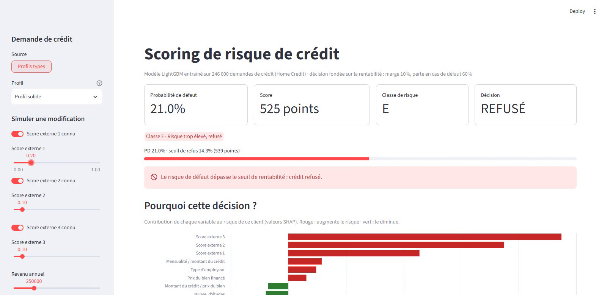

Risque de crédit · Machine learning
Scoring du risque de crédit
Modèle complet sur 307 000 demandes de prêt : scorecard (WoE / IV, régression logistique), LightGBM (AUC 0,79) expliqué client par client avec SHAP, probabilités de défaut calibrées et politique d'octroi fondée sur la marge et la LGD (+22 % de rentabilité).
- Python
- SQL
- LightGBM
- SHAP
- FastAPI
- Streamlit